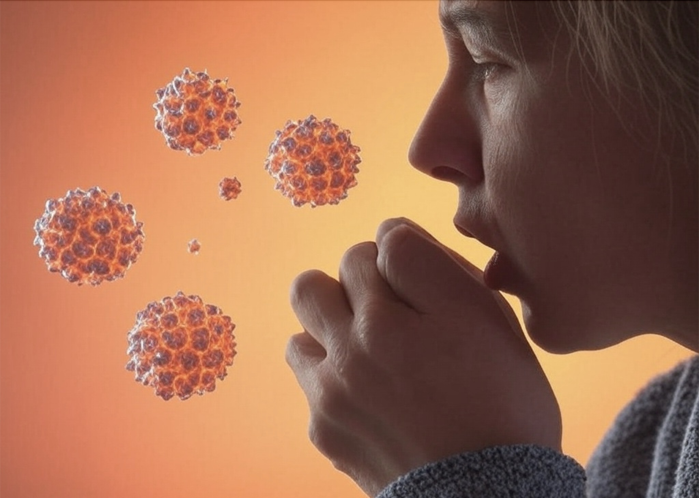

Stay informed, stay healthy.
Norovirus causes approximately 685 million cases of acute gastroenteritis worldwide each year (CDC). In the United States alone, it leads to an estimated 21 million illnesses, with thousands of hospitalizations and approximately 900 deaths annually (CDC Norovirus Statistics).
It is the leading cause of foodborne illness globally and spreads rapidly in crowded or closed settings such as cruise ships, schools, and healthcare facilities (WHO).
Proper hygiene is the most effective way to prevent Norovirus infection. Health experts recommend frequent handwashing with soap and water, especially after using the toilet or changing diapers, and before eating or preparing food (CDC Prevention).
Surfaces should be disinfected using bleach-based cleaners, and contaminated laundry should be washed thoroughly. People should avoid preparing food for others when experiencing symptoms and wait at least two days after symptoms resolve before doing so (CDC Clinical Overview).
Explore these trusted resources for more in-depth information and guidance:
CDC Norovirus Guide WHO Norovirus InfoNorovirus is highly contagious and can spread quickly through contaminated food, water, or surfaces. It causes sudden onset vomiting and diarrhea and can lead to dehydration, especially in the very young and elderly (CDC Symptoms).
There is currently no vaccine or specific antiviral treatment for Norovirus. Public health organizations such as the CDC and WHO continue to monitor outbreaks and support research into long-term solutions (PubMed).